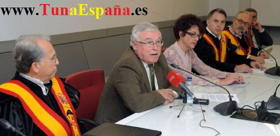
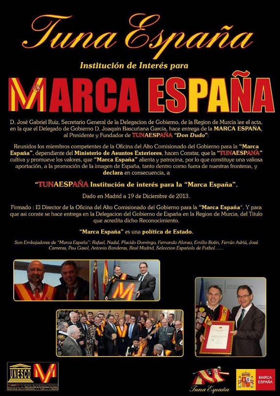
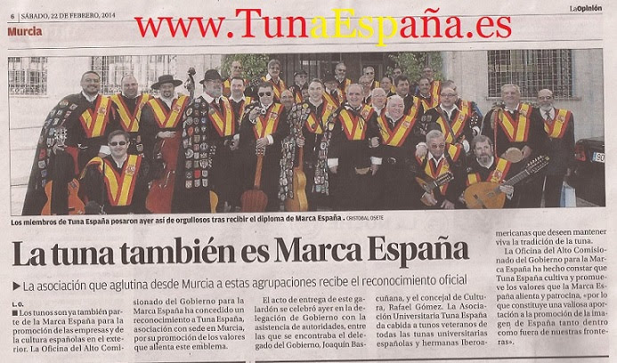

Tuna España & Marca España
Discurso de S.M. el Rey tras la entrega de las acreditaciones de Embajadores de la Marca España
Lectura del Acta de Concesión
de “Marca España” a “TunaEspaña”
D. José Gabriel Ruiz, Secretario General de la Delegacion de Gobierno, de la Region de Murcia lee el acta, en la que el Delegado de Gobierno D. Joaquín Bascuñana García, hace entrega de la Marca España, al Presidente y Fundador de TunaEspaña “Don Dudo”: Reunidos los miembros competentes de la Oficina del Alto Comisionado del Gobierno para la “Marca España”, dependiente del Ministerio de Asuntos Exteriores, hacen Constar, que la “TunaEspaña”
cultiva y promueve los valores, que “Marca España” alienta y patrocina, por lo que constituye una valiosa aportación, a la promoción de la imagen de España, tanto dentro como fuera de nuestras fronteras, y declara en consecuencia, a “TunaEspaña”
Institución de Interes para la “Marca España”.
Dado en Madrid a 19 de Diciembre de 2013.
Firmado : El Director de la Oficina del alto comisionado del gobierno para la “Marca España
“. Y para que asi conste se hace entrega en la Delegacion del Gobierno de España en la Region de Murcia, Del Titulo que acredita dicho Reconocimiento.
Reunion en Madrid, Ministerio Asuntos Exteriores y Cooperacion: Don Ignacio Garcia-Valdecasa (Asesor Del Alto Comisionado del Gobierno para la “Marca España”)
Don Niky Lauda (Vocal “TunaEspaña), Don Jose Angel Lopez Jorrin, Director Oficina del alto comisionado del Gobierno para La “Marca España”, con La Beca “TunaEspaña”, “Don Dudo” (Presidente-Fundador de
“TunaEspaña”), Don Visedo (Secretario “TunaEspaña), Don RadioPita (Tesorero “TunaEspaña”
)
. “Marca España” es una política de Estado. Su objetivo es mejorar la imagen de nuestro país, tanto en el interior como más allá de nuestras fronteras, en beneficio del bien común. En un mundo global, una buena imagen-país es un activo que sirve para respaldar la posición internacional de un Estado política, económica, cultural, social, científica y tecnológicamente. Son Embajadores de “Marca España” : Rafael, Nadal, Placido Domingo, Fernando Alonso, Emilio Botin, Ferrán Adriá, José Carreras, Pau Gasol, Antonio Banderas, Real Madrid, Selección Española de Fútbol,,,,,,,
Don Jose Angel Lopez Jorrin, Director Oficina del alto comisionado del Gobierno para La “Marca España“,
con La Beca “TunaEspaña” y “Don Dudo” (Presidente-Fundador “TunaEspaña
“)
El Delegado del Gobierno D. Joaquín Bascuñana García, entrega a D. Dudo (Presidente – Fundador) el título que acredita a “TunaEspaña”
como institución de interés para la promoción de España y nuestra pertenencia a “Marca España”.
D. Dudo (Presidente – Fundador) entrega La beca de “TunaEspaña”
al Delegado del Gobierno D. Joaquín Bascuñana García.
El Acto de entrega del título que acredita a “TunaEspaña”como institución de interés para la promoción de España y nuestra pertenencia a “Marca España”,
se realizó en la Delegación, de Gobierno de España, donde estuvieron representadas las tres instituciones del Estado Español, asi como La Universidad, y cuerpos de Seguridad del Estado (Policia Nacional, Guardia Civil)
Rueda de Prensa, en el Rectorado de La Universidad de Murcia, para comunicar a la comunidad Universitaria, y medios de Comunicacion, la obtención, de tan alta
distinción. El primero en comunicarlo, fue nuestro Excelentisimo y Magnifico Sr. Rector de la Universidad de Murcia D. Jose Antonio Cobacho Gomez, Catedratico de Derecho Civil
. Rueda de Prensa, en el Rectorado Universidad de Murcia, presidida por Excelentisimo y Magnifico Sr. Rector de la Universidad de Murcia
D. Jose Antonio Cobacho Gomez, Catedratico de Derecho Civil, y por Dña. María de los Ángeles Esteban Abad, Vicerrectora de Coordinación y Comunicación




{kind=link}
{kind=link}
{kind=link}
{kind=link}
{kind=link}
{kind=link}
{kind=link}
{kind=link}
{kind=link}